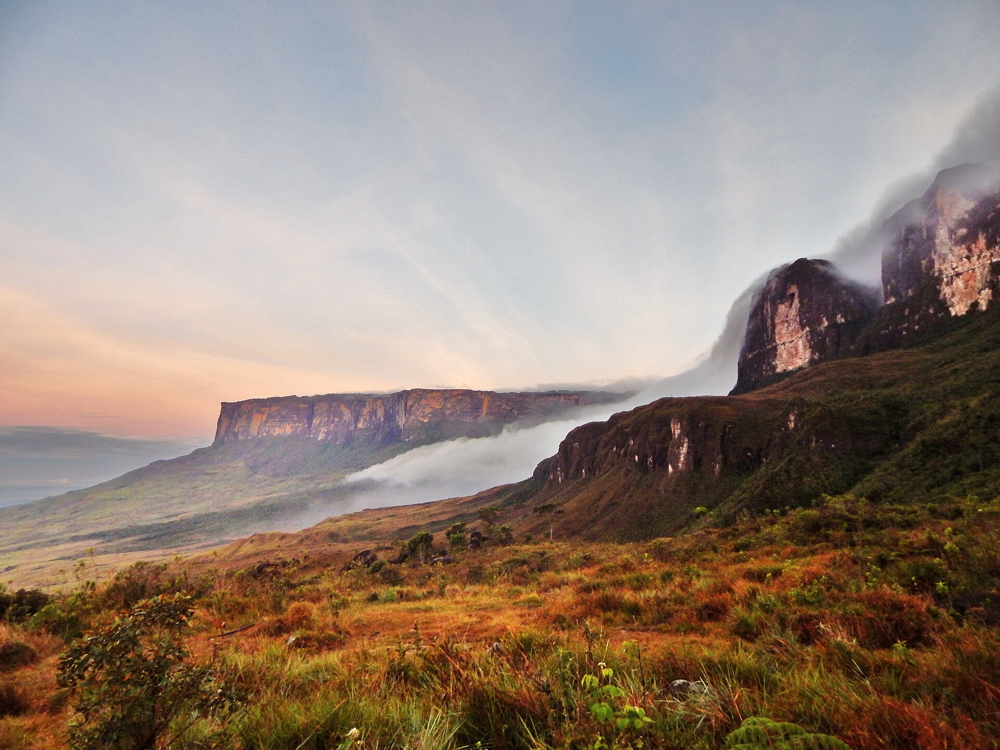

Roraiman Antbird
Myrmelastes saturatusBirdLife records this forest bird in Guyana and Venezuela. Its habitat may not overlap the route I eventually take.
A very personal expedition back to myself.
Two years postpartum, navigating perimenopause and finding my way back to myself. I registered the domain for the rhyme. My mountain is Monte Roraima.
I had the bariatric surgery. I lost the weight. I rebuilt my relationship with food, piece by awkward piece. Then I got pregnant, had a baby, and discovered that motherhood comes with many wonderful things.
Sleep deprivation. Hormonal chaos. A completely new body.
And approximately twenty kilos I hadn’t invited to stay.
Now I’m navigating postpartum life, perimenopause and a plan that includes Mounjaro. Life looked at everything I’d already accomplished and asked if I had room for another challenge.
We live in a world where, apparently, there’s a pill for everything. Can’t sleep? Pill. Can’t concentrate? Pill. Can’t lose weight? Well, there’s an injection for that now. And society has opinions.
Some people call weight-loss medication cheating. Which is interesting, because nobody ever explained who was refereeing this competition.
The one where willpower is a moral category, perimenopause is a rumour, and a woman’s body is supposed to do what she asks it to on the first try. I’m not interested.
Mounjaro is part of the plan I’m discussing with my care team. I also want to get stronger, move better, enjoy exercise again, and, honestly, have my old clothes fit. Sue me.
I don’t want to build my whole identity around an injection. I want to build it around the woman using it.
I registered mounjarotokillimanjaro.com because the words rhyme. It was a good name for a beginning, even as motherhood and perimenopause changed what I wanted from a trip.
Kilimanjaro is still on my travel list. Maybe a safari, a small hike nearby and a coffee with the mountain in front of me. I am not making a plan to climb it. The rhyme has already done its job.
A place I would still love to visit. A safari and a small nearby walk would be enough of an adventure.
Mounjaro to Roraima does absolutely nothing for the rhyme. Roraima is still where I want to go.
The mountain I want to walk is Monte Roraima. I want the birds, the forest, the strange plants and time to notice them. Yes, I want to celebrate losing weight. I also want a trip where I can hear my own thoughts.
I’m too Latina to ignore Roraima. It’s the flat-topped giant where Brazil, Venezuela and Guyana meet. A landscape of sandstone, cloud and forest. And, more quietly, it reminds me of walks on family farms when I was small, when the land felt vast and loud with birds.

First, an illustration. Then, the mountain itself. The Venezuelan tepui landscapes also helped shape the imagined world of Up.
Photograph by Mauricio Campello, CC BY-SA 4.0. Display cropped to fit.
Roraima is part of the homelands and living stories of Kapon and Pemon peoples. There is more than one telling of the great tree of all fruits, called Wayaka or Wazaká, and of the mountain left by its fall.
In an Ingarikó account told in Kapon by João Sales and translated by teacher Samuel Camilo Williams, Makunaimë and his brother Siikë follow an animal to the tree. Siikë brings it down. Water later escapes from the trunk and changes the world around them.
Macuxi artist Jaider Esbell described the felling of a great tree as the event that became Monte Roraima, and spoke of Makunaima as an ancestor. That is a different way to meet this place than seeing it only as a summit to reach. I want to arrive ready to listen, with a local guide and, ideally, dry socks.
Read the Ingarikó account and Jaider Esbell’s interview. The details vary between communities and narrators.
Kapon and Pemon peoples tell stories of Makunaima and his kin in different ways. The storytellers and their communities belong at the beginning of this history.
German ethnographer Theodor Koch-Grünberg records stories told by Pemon narrators Mayuluaípu and Akuli, later published in Vom Roraima zum Orinoco.
Mário de Andrade draws on the published stories for his modernist novel Macunaíma. The Indigenous narrators are much less visible in the version most Brazilians know.
Macuxi artist Jaider Esbell writes of Makunaima as his grandfather and ancestor, placing an Indigenous voice back at the centre of the story.
The mountain has a story before it has a trail.
The classic route starts on the Venezuelan side. First, 78 km by 4x4 from Santa Elena de Uairén to the village of Paraitepui. Then on foot across open savannah and two rivers, the Tëk and the Kukenan, to base camp under the tepui’s near-vertical wall. A natural ramp of loose rock climbs the wall to the summit, which people describe as arriving on another planet.
The mountain is protected by Canaima National Park in Venezuela and Monte Roraima National Park in Brazil. My own route, days and access are still to plan with a local guide.
78 km by 4x4. The walk starts at 1,200 m.
About 13 km to the Tëk and Kukenan camps, 1,050 m.
About 9 km, climbing to 1,870 m under the wall.
Only 2.5 km, but steep loose rock, to the summit camps at 2,700 m.
Around 10 km of wandering: the triple border point, Lago Gladys and La Proa, 2,750 m.
Roraima is part of the Pantepui, a region of tabletop mountains and varied habitats. I want to learn about the birds and plants before I go, then ask a local guide what the chosen route may actually offer.
I want to walk slowly and pay attention. This is a reading list, not a promise of sightings.
BirdLife records this forest bird in Guyana and Venezuela. Its habitat may not overlap the route I eventually take.
One of the birds I want to read about while planning. Whether I see it will depend on the route and conditions.
A vivid bird of the wider region. I will check likely habitat with a local guide before adding it to a route list.
A carnivorous plant associated with the tepui landscape. One to learn about and observe without disturbing it.
A sundew named for Roraima. I would love to notice the smaller life around the trail as well as the view.
A small, dark toad associated with the high tepuis. One to look for carefully, without handling or disturbing it.
Field-guide references: BirdLife · Kew · American Museum of Natural History. Species and sightings depend on route, habitat and season.
The route I am considering is a multi-day trek with steep climbs and changeable weather. I still need to confirm the itinerary with a local guide. Preparing also means making room for childcare, rest and the invisible work that usually travels with me.
The routines that make the walk possible.
Dates, people and the practical pieces.
Useful, comfortable and worth carrying.
Leave space for the reason I am going.
I’m calling the project Kill Mounjaro. The name makes me laugh. The plan is to explore what medical care, movement, food and time in nature might make possible for me.
My starting point is 98 kg. My tentative destination is 75 kg. The summit I’m aiming at is Roraima. The coffee at the base of Kilimanjaro is, let’s say, a bonus chapter.
I hope to document progress, ridiculous moments, things that work and things that don’t. No miracle transformations. No pretending motherhood ends after six weeks. No before-and-after photos designed to make the woman in the “before” look miserable.
Motherhood comes with a running list in my head. The planning, the remembering, the things nobody notices until they haven’t been done. I can organise a trip without turning it into another test of how much I can carry.
Roraima is a celebration of the weight I hope to lose, and a chance to put some other weight down for a while. Walk. Watch birds. Be close to nature. Remember what I enjoy when nobody needs anything from me.
When there is a real week to write about, I’ll write about that.
The calendars, remembering and invisible labour are real. I want this walk to leave space for myself, not become another test of what I can carry.
Walking near Dublin, my plan for three weekly reformer sessions and the time I actually have.
See the preparation plan ↗The questions I want to ask as I make decisions about Mounjaro with my care team.
About the experiment ↗Learning about the wider Guayana highlands before making a route-specific list with a local guide.
Meet the wildlife ↗I would like to share the walks, the questions, the birds and the ordinary days as they happen. There is no mailing list yet, so there is nothing to sign up for today.
Sign-up opens when a mailing service is connected.